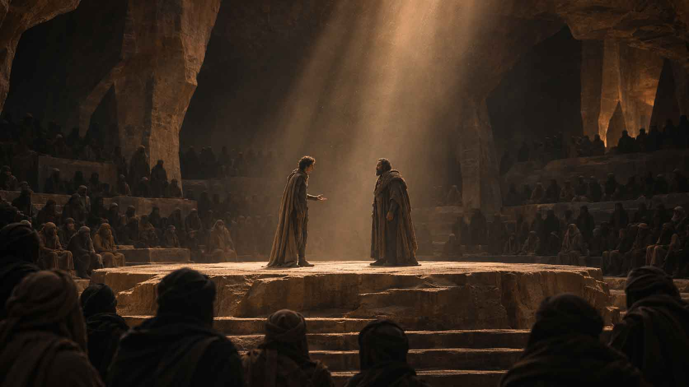

La Voz del Mundo Exterior
El Eco de las Profecías
Caminás con paso firme entre los líderes del sur y nombrás detalles íntimos de su pasado que nadie más podía conocer. El asombro se transforma en devoción: susurran Lisan al-Gaib.

El fervor crece en el Sietch. ¿Cuál es tu siguiente paso?